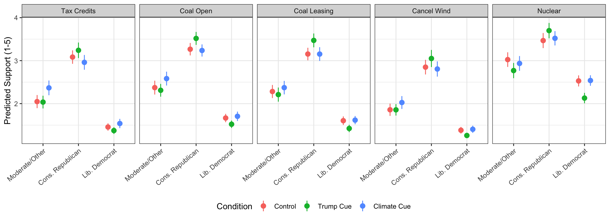
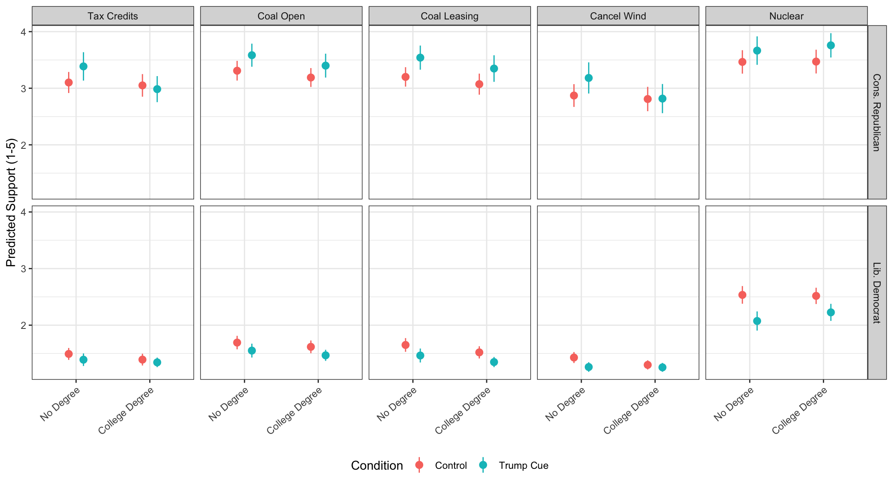

| Tax Credits | Coal Open | Coal Leasing | Cancel Wind | Nuclear | |
|---|---|---|---|---|---|
| † p < 0.1, * p < 0.05, ** p < 0.01, *** p < 0.001 | |||||
| Survey-weighted OLS (svyglm). Reference categories: control condition, moderate/other political identity, no college degree. All models also control for age, gender, race, and income (omitted here for space). | |||||
| Trump Cue | -0.036 | -0.071 | -0.112 | -0.041 | -0.316* |
| (0.137) | (0.143) | (0.149) | (0.116) | (0.161) | |
| Climate Cue | 0.312** | 0.205† | 0.083 | 0.161 | -0.109 |
| (0.119) | (0.117) | (0.113) | (0.106) | (0.120) | |
| Cons. Republican | 1.134*** | 0.984*** | 0.966*** | 1.120*** | 0.515*** |
| (0.134) | (0.134) | (0.130) | (0.130) | (0.143) | |
| Lib. Democrat | -0.467*** | -0.635*** | -0.595*** | -0.304** | -0.309* |
| (0.110) | (0.116) | (0.114) | (0.096) | (0.127) | |
| College | 0.209† | 0.101 | 0.067 | 0.321** | 0.211† |
| (0.116) | (0.114) | (0.110) | (0.115) | (0.113) | |
| Trump x ConRep | 0.306 | 0.333† | 0.450* | 0.325 | 0.485* |
| (0.209) | (0.197) | (0.204) | (0.207) | (0.223) | |
| Climate x ConRep | -0.446** | -0.243 | -0.095 | -0.215 | 0.113 |
| (0.167) | (0.156) | (0.157) | (0.163) | (0.167) | |
| Trump x LibDem | -0.085 | -0.084 | -0.090 | -0.150 | -0.172 |
| (0.157) | (0.167) | (0.172) | (0.134) | (0.198) | |
| Climate x LibDem | -0.251† | -0.187 | -0.096 | -0.161 | 0.115 |
| (0.137) | (0.137) | (0.132) | (0.121) | (0.147) | |
| Trump x College | 0.068 | 0.041 | 0.126 | 0.102 | 0.131 |
| (0.190) | (0.186) | (0.198) | (0.182) | (0.196) | |
| College x ConRep | -0.242 | -0.214 | -0.185 | -0.352* | -0.305† |
| (0.161) | (0.149) | (0.151) | (0.166) | (0.159) | |
| College x LibDem | -0.279* | -0.156 | -0.165 | -0.415*** | -0.347* |
| (0.131) | (0.132) | (0.126) | (0.125) | (0.139) | |
| Trump x ConRep x College | -0.387 | -0.077 | -0.170 | -0.356 | -0.049 |
| (0.281) | (0.256) | (0.276) | (0.289) | (0.277) | |
| Trump x LibDem x College | -0.002 | -0.045 | -0.104 | 0.038 | 0.083 |
| (0.213) | (0.213) | (0.222) | (0.199) | (0.241) | |
| Intercept | 1.924*** | 2.272*** | 2.246*** | 1.673*** | 2.299*** |
| (0.124) | (0.121) | (0.120) | (0.117) | (0.130) | |
| Num.Obs. | 3113 | 3113 | 3113 | 3113 | 3113 |
| R2 | 0.335 | 0.372 | 0.364 | 0.321 | 0.231 |
Partisan vs Climate Cues and Public Opinion about Trump’s Actions on Energy
Introduction
For this project, I will use a survey experiment to examine the polarization in support for several recent administration actions on energy when respondents are given a Trump cue, a climate change cue, and no cues. Specifically, I will survey 3,000 respondents recruited from Cloud Research, with 1,000 participants receiving a Trump cue, 1,000 receiving a climate cue, and 1,000 in the control condition receiving no cue. Respondents in each condition will be asked about their level of support for several actions, including limiting tax credits for wind and solar projects, requiring coal plants to remain open, opening federal lands for coal leasing, cancelling a nearly complete offshore wind project, and shortening the timeline of regulatory approval for new nuclear plants.
I have several preregistered hypotheses regarding how respondents will respond to the Trump and climate cues based on political beliefs and education compared to those in the control group.
Cues and Cue-Taking
Partisan cues function as a heuristic that allows citizens to form opinions on complex policy issues without extensive information (Kam 2005; Schaffner and Streb 2002). Rather than evaluating the substantive merits of a policy, citizens often infer their own position from the position taken by their preferred party or its elites, a process that is well documented across a wide range of issues (Leeper and Slothuus 2014; Slothuus and de Vreese 2010). This cue-taking is best understood through the lens of motivated reasoning, wherein citizens process information in a way that protects and reinforces their prior partisan commitments rather than arriving at accuracy (Petersen et al. 2013; Taber and Lodge 2006). As elite polarization has intensified, party cues have become an increasingly powerful, and at times dominant, force in opinion formation, often overwhelming the effect of substantive policy information (Druckman, Peterson, and Slothuus 2013).
Climate change and energy policy are particularly susceptible to this dynamic. As shown by Feldman and Hart (2018), simply attaching a climate change frame or a cue from a Democratic source to an energy policy is often enough to depress support among Republicans, even when the underlying policy is left unchanged. Similarly, out-group cues from Democratic elites have been found to produce a durable backlash in climate skepticism among Republican identifiers (Merkley and Stecula 2021), and partisan cue-taking extends to more recent and salient energy proposals, such as the Green New Deal (McConnell 2022). These findings suggest that Trump cues and climate cues are likely to activate similar, but oppositely signed, partisan reactions to actions on energy: conservative Republicans are likely to become more supportive when an action is cued as coming from Trump or as countering climate change, whereas liberal Democrats are likely to become less supportive under the same cues.
Whether cue-taking of this kind is more pronounced among the less educated, however, is not as settled as the classic heuristics literature might suggest. Early accounts of the partisan heuristic emphasize that cue-taking substitutes for the cognitive effort required to process substantive information, implying that citizens with fewer cognitive resources, such as those without a college degree, should rely on party cues the most (Kam 2005). Numeracy research supports this account: low-numeracy respondents rely more heavily on party cues, while high-numeracy respondents are more likely to update toward substantive policy information when it is available (Mérola and Hitt 2016). Yet effortful thinking alone does not appear to be sufficient to reduce cue reliance; it is the availability of policy information, not cognitive effort per se, that weakens party cue effects (Tappin and McKay 2026). Complicating the picture further, political sophistication and education are also associated with more effective motivated reasoning, meaning that better-informed citizens may process cue-congruent information more efficiently rather than less (Kahan 2013). Bakker, Lelkes, and Malka (2019) similarly find that cue receptivity is not simply a function of bounded rationality but is strongest when cognitive resources are placed in service of expressive, identity-affirming reasoning. Consistent with this more conditional pattern, education has been found to amplify, rather than dampen, partisan polarization over climate change, particularly among conservatives (Hamilton 2011). Together, this literature suggests that a college degree is likely to shape responsiveness to Trump and climate cues, but the direction of that relationship is less straightforward than the low-information heuristic model implies.
In the next section, I describe the specific actions on energy included in the survey experiment and the hypotheses derived from this literature.
Trump Actions on Energy
trump actions in his first year as president for the second time
Hypotheses
H1: Conservative Republicans who receive the Trump or climate change cue will be more supportive of Trump’s actions on energy than others
H2: Liberal Democrats who receive the Trump or climate change cue will be less supportive of Trump’s actions on energy than others
H3: Conservative Republicans without a college degree who receive the Trump cue will be more supportive of Trump’s actions on energy than others
H4: Liberal Democrats without a college degree who receive the Trump cue will be less supportive of Trump’s actions on energy than others
Data and Measures
Data is from a public opinion survey and weighted to match the population on key demographics and partisanship
Conservative Republican = conRep Liberal Democrats = libDem college = 1 if college degree; 0 if not
I also control for demographics including age, male, white, and income
Trump Actions
Recently, the [Trump Administration/Federal government] took several actions to shape electricity generation in the U.S.
[Scientists are concerned that the actions associated with coal, wind, and solar energy will make climate change worse.]
Using a scale of 1 to 7, where 1 means strongly oppose and 7 means strongly support, how do you feel about the following actions of the [Trump Administration/Federal government]? [randomize]
• The [Trump Administration/Federal government] limiting the eligibility of wind and solar energy projects for federal tax credits • The [Trump Administration/Federal government] requiring coal plants that were set to retire to remain open • The [Trump Administration/Federal government] opening 13.1 million acres of federal land for coal leasing • The [Trump Administration/Federal government] cancelling an offshore wind project that was nearly complete • The [Trump Administration/Federal government] shortening the time it takes to approve and license the construction of new nuclear power plants
Results


- H1 (conRep more supportive under either cue): partially supported. The Trump cue significantly increased conservative Republicans’ support for coal leasing (b = 0.45, p = .028) and nuclear licensing (b = 0.49, p = .030), marginally increased support for keeping coal plants open (b = 0.33, p = .091), and was positive but not significant for the other two actions. The climate cue did not increase conRep support for any action, and significantly reduced it for renewable tax credits (b = -0.45, p = .008).
- H2 (libDem less supportive under either cue): not supported at conventional significance. Both cues moved libDem support in the hypothesized negative direction for four of five actions, but no coefficient reached p < .05; the climate cue’s effect on tax-credit support was marginal (b = -0.25, p = .066).
- H3 (Trump-cue effect on conRep concentrated among non-college respondents): not supported. The trump.cue x conRep x college term was negative in all five models (consistent with the effect being stronger among non-college conRep), but never reached significance.
- H4 (Trump-cue effect on libDem concentrated among non-college respondents): not supported. The trump.cue x libDem x college term was small, inconsistent in sign across models, and not significant in any.
Overall, the clearest evidence is for H1: the Trump cue, but not the climate cue, increased conservative Republican support for two to three of the five actions (coal leasing and nuclear licensing significantly; keeping coal plants open marginally). There is no reliable evidence that either cue suppressed liberal Democrats’ support (H2), or that education moderated the Trump cue’s effect on either group (H3, H4). Dropping the Trump-approval control leaves these conclusions materially unchanged.
Discussion
Conclusion
References
Bakker, Bert, Yphtach Lelkes, and Ariel Malka. 2019. “Understanding Partisan Cue Receptivity: Tests of Predictions from the Bounded Rationality and Expressive Utility Perspectives.” The Journal of Politics.
Druckman, James N., Erik Peterson, and Rune Slothuus. 2013. “How Elite Partisan Polarization Affects Public Opinion Formation.” American Political Science Review 107(01): 57–79.
Feldman, Lauren, and P. Sol Hart. 2018. “Climate Change as a Polarizing Cue: Framing Effects on Public Support for Low-Carbon Energy Policies.” Global Environmental Change 51: 54–66.
Hamilton, Lawrence C. 2011. “Education, Politics and Opinions about Climate Change Evidence for Interaction Effects.” Climatic Change 104(2): 231–42.
Kahan, Dan M. 2013. “Ideology, Motivated Reasoning, and Cognitive Reflection.” Judgement and Decision Making 8(4): 407–24.
Kam, Cindy. 2005. “Who Toes the Party Line? Cues, Values, and Individual Differences.” Political Behavior 27(2): 163–82.
Leeper, Thomas J., and Rune Slothuus. 2014. “Political Parties, Motivated Reasoning, and Public Opinion Formation.” Political Psychology 35(S1): 129–56.
McConnell, Kathryn. 2022. “‘The Green New Deal’ as Partisan Cue: Evidence from a Survey Experiment in the Rural U.S.” Environmental Politics 0(0): 1–33.
Merkley, Eric, and Dominik A. Stecula. 2021. “Party Cues in the News: Democratic Elites, Republican Backlash, and the Dynamics of Climate Skepticism.” British Journal of Political Science 51(4): 1439–56.
Mérola, Vittorio, and Matthew P. Hitt. 2016. “Numeracy and the Persuasive Effect of Policy Information and Party Cues.” Public Opinion Quarterly 80(2): 554–62.
Petersen, Michael Bang, Martin Skov, Søren Serritzlew, and Thomas Ramsøy. 2013. “Motivated Reasoning and Political Parties: Evidence for Increased Processing in the Face of Party Cues.” Political Behavior 35(4): 831–54.
Schaffner, Brian F., and Matthew J. Streb. 2002. “The Partisan Heuristic in Low-Information Elections.” Public Opinion Quarterly 66(4): 559–81.
Slothuus, Rune, and Claes de Vreese. 2010. “Political Parties, Motivated Reasoning, and Issue Framing Effects.” The Journal of Politics 72(3): 630–45.
Taber, Charles S., and Milton Lodge. 2006. “Motivated Skepticism in the Evaluation of Political Beliefs.” American Journal of Political Science 50(3): 755–69.
Tappin, Ben M., and Ryan McKay. 2026. “Estimating the Causal Effects of Cognitive Effort and Policy Information on Party Cue Influence.” Political Psychology 47(2).